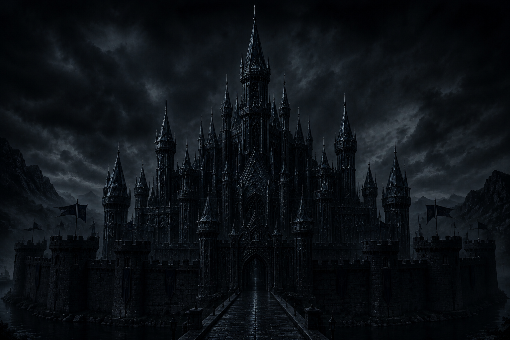

O despertar da alma
O Castelo Interior da Alma
Neste capítulo, Santa Teresa apresenta a imagem central de todo o livro: a alma humana como um castelo interior cheio de moradas, no centro do qual habita Deus. Ela explica a dignidade da alma, a importância da oração e o perigo de viver sem entrar dentro de si mesma.
A alma é um castelo precioso habitado por Deus
A alma é comparada a:
- um castelo de cristal ou diamante;
- cheio de aposentos;
- com uma morada central onde Deus habita.
Frase central:
O castelo interior simboliza a alma habitada por Deus.
A imagem mostra:
- a beleza da alma;
- sua profundidade;
- sua dignidade divina.
A alma foi criada à imagem de Deus
Santa Teresa insiste que:
- a alma possui valor imenso porque foi criada à imagem e semelhança de Deus;
- nossa inteligência não consegue compreender plenamente sua grandeza.
Frase importante:
O maior problema humano é não se conhecer
Ela lamenta que:
- as pessoas cuidem apenas do corpo;
- quase nunca pensem na alma;
- ignorem quem habita dentro delas.
Imagem marcante:
Admiramos “a muralha do castelo” (o corpo), mas não entramos nos seus aposentos interiores.
Para Santa Teresa, isso é uma profunda ignorância espiritual.
No centro da alma acontecem as coisas secretas entre Deus e a pessoa
A morada principal:
- é o lugar da intimidade com Deus;
- o espaço das maiores graças espirituais;
- o coração da vida interior.
Ela explica que Deus concede diferentes graças às almas:
- não apenas por mérito;
- mas para manifestar Sua grandeza e misericórdia.
Não devemos limitar a ação de Deus
Santa Teresa critica quem:
- duvida das graças espirituais;
- acha impossível uma profunda união com Deus;
- escandaliza-se com experiências místicas.
Frase-chave:
Ela afirma que Deus pode comunicar-se profundamente com qualquer alma.
Entrar no castelo significa entrar dentro de si
Muitas pessoas:
- vivem “ao redor” do castelo;
- nunca entram em si mesmas;
- vivem dispersas nas coisas exteriores.
Entrar no castelo significa:
- voltar-se para o interior;
- buscar Deus dentro da alma;
- despertar espiritualmente.
A porta do castelo é a oração
Este é um dos ensinamentos mais famosos do capítulo.
Frase central:
Ela explica que:
- oração não é repetir palavras mecanicamente;
- exige consciência de: com quem se fala; quem fala; o que se pede.
Sem atenção interior, não há verdadeira oração.
A alma sem oração fica paralisada
Santa Teresa compara a alma sem oração a:
- um corpo paralítico;
- incapaz de mover-se espiritualmente.
Essas almas:
- vivem presas ao exterior;
- acostumam-se às distrações;
- esquecem sua dignidade.
As primeiras moradas ainda são cheias de distrações
As almas que começam a rezar:
- ainda estão muito ligadas ao mundo;
- entram no castelo com muitos “vermes” e distrações;
- têm boa vontade, mas pouca firmeza.
Mesmo assim: já é grande progresso começar a entrar dentro de si.
Principais frases resumidas
“A alma é um castelo de diamante ou cristal.”
“Nada se compara à beleza da alma.”
“Fomos criados à imagem e semelhança de Deus.”
“No centro da alma está a morada principal.”
“A porta do castelo é a oração e a reflexão.”
“As almas sem oração são como um corpo paralítico.”
“Deus não gosta que imponham limites às Suas obras.”
“Poucas vezes pensamos nas riquezas que a alma encerra.”
A alma humana possui capacidade de união com Deus
A alma humana possui:
- beleza imensa;
- profundidade espiritual;
- capacidade de união com Deus.
Mas a maioria vive distraída nas coisas exteriores.
O caminho espiritual começa quando:
- a pessoa entra dentro de si mesma;
- reconhece a presença de Deus no interior;
- aprende a rezar verdadeiramente;
- passa da superficialidade para a vida interior.
Para Santa Teresa, a oração é a porta de entrada para todo o caminho espiritual.
A alma obscurecida pelo pecado
Este capítulo descreve o estado da alma quando está em pecado mortal e destaca a importância do autoconhecimento, da humildade e da vigilância espiritual.
A alma em pecado mortal perde sua luz
Santa Teresa compara a alma a um castelo iluminado por Deus. Quando cai em pecado mortal:
- a alma permanece capaz de receber Deus, mas fica obscurecida;
- suas obras deixam de produzir frutos espirituais;
- ela se afasta da fonte da vida e passa a produzir “desventura e imundície”.
Frase central:
Ela insiste que o pecado mortal é o maior mal possível, porque separa a alma de Deus.
Deus continua presente no centro da alma
Mesmo no pecado, Deus não desaparece da alma:
- o “Sol” continua brilhando no centro;
- o problema está na alma, que se cobre de escuridão.
Imagem importante:

Castelo interior de uma alma em estado de pecado mortal.
Necessidade do autoconhecimento
Um dos temas mais importantes do capítulo é:
- conhecer a si mesmo é essencial para crescer espiritualmente;
- esse conhecimento deve acontecer à luz de Deus, e não apenas olhando para os próprios defeitos.
Frase-chave:
Ela explica que:
- contemplar a grandeza de Deus revela nossa pequenez;
- contemplar Sua pureza mostra nossa impureza;
- contemplar Sua humildade revela nossa falta de humildade.
Humildade verdadeira não é viver preso à culpa
Santa Teresa alerta contra uma falsa humildade que:
- paralisa;
- gera medo;
- impede a oração e o progresso espiritual.
Ela mostra como o demônio usa pensamentos aparentemente humildes:
- “não sou digna”;
- “oração não é para mim”;
- “isso é presunção”.
Esses pensamentos acabam afastando a pessoa de Deus.
A alma possui grande dignidade
A alma é vasta, rica e cheia de moradas interiores.
Ela aconselha:
- não limitar a alma;
- permitir que ela avance;
- não permanecer presa apenas ao exame dos próprios defeitos.
Imagem marcante:
O demônio age de maneira sutil
Grande parte do capítulo fala da ação enganadora do demônio:
- ele usa até coisas boas para desviar a alma;
- exageros de penitência ou zelo podem destruir a caridade;
- críticas e vigilância excessiva sobre os outros causam divisão.
Ensinamento principal:
A caridade é mais importante que rigorismos
Santa Teresa insiste:
- cada irmã deve olhar mais para si mesma do que para os defeitos das outras;
- murmuração e julgamento destroem a paz;
- o amor fraterno é o verdadeiro caminho de perfeição.
Principais frases resumidas
“Não há trevas mais medonhas do que a alma em pecado mortal.”
“O Sol que resplandece no centro da alma nunca perde o brilho.”
“Jamais nos conheceremos realmente sem antes conhecer a Deus.”
“A humildade sempre fabrica o seu mel, como a abelha na colmeia.”
“A perfeição verdadeira é amar a Deus e ao próximo.”
“Quanto mais nos empenharmos nesses dois mandamentos, mais perfeitas seremos.”
“O demônio se transfigura em anjo de luz.”
“Fixemos os olhos em Cristo, nosso bem.”
O caminho espiritual nasce da humildade e da caridade
O verdadeiro caminho espiritual começa quando:
- a alma reconhece sua miséria;
- conhece a Deus;
- aprende a humildade;
- evita o pecado;
- cresce no amor ao próximo;
- permanece vigilante contra ilusões espirituais.
Para Santa Teresa, a vida interior não consiste em perfeccionismo ou medo, mas em caminhar para Deus com humildade, autoconhecimento e caridade.
A batalha da perseverança
A alma começa a lutar seriamente para permanecer com Deus
Neste capítulo, Santa Teresa descreve a situação das almas que já começaram a rezar e perceberam que precisam mudar de vida, mas ainda lutam fortemente contra:
- os apegos;
- as distrações;
- as tentações do mundo;
- as oscilações interiores.
O tema principal das segundas moradas é a perseverança.
Essas almas:
- já ouviram o chamado de Deus;
- começaram a oração;
- querem avançar espiritualmente;
- mas ainda vivem em conflito interior.
É uma fase marcada por:
- batalha espiritual;
- quedas;
- recomeços;
- crescimento lento;
- combate constante.
Deus continua chamando a alma
Mesmo quando a pessoa:
- está distraída;
- presa ao mundo;
- cheia de imperfeições;
- dividida interiormente;
Deus continua chamando com paciência e misericórdia.
Santa Teresa mostra que Deus fala através de:
- sermões;
- livros espirituais;
- pessoas boas;
- sofrimentos;
- doenças;
- verdades percebidas na oração.
Frase-chave:
A alma vive uma guerra interior
Aqui começa uma luta muito intensa:
- entre Deus e o mundo;
- entre o desejo espiritual e os prazeres;
- entre perseverar ou voltar atrás.
O demônio:
- exagera os prazeres do mundo;
- desperta medo;
- lembra afetos e comodidades;
- multiplica distrações;
- tenta convencer a alma de que é impossível avançar.
Imagem forte:
Santa Teresa mostra que, nesta fase, a pessoa sente claramente o conflito entre dois caminhos.
Perseverança é a chave principal
Este é provavelmente o ensinamento mais importante do capítulo.
Frase central:
Mesmo:
- caindo;
- demorando;
- sofrendo;
- sem consolações espirituais;
- lutando contra distrações;
a pessoa deve continuar.
Santa Teresa insiste:
- Deus sabe esperar;
- o importante é não abandonar a oração;
- quem persevera acabará avançando.
O mundo é enganoso e vazio
A alma começa a perceber:
- a fragilidade das coisas do mundo;
- a rapidez da morte;
- a falsidade dos prazeres;
- que só Deus oferece paz verdadeira.
Santa Teresa compara o mundo a:
- veneno;
- ilusões;
- casas alheias sem segurança.
Frase importante:
Ou seja: a verdadeira riqueza está dentro da alma, onde Deus habita.
É essencial ter boas companhias espirituais
Santa Teresa aconselha:
- conversar com pessoas que buscam Deus;
- aproximar-se de almas mais avançadas;
- evitar más companhias;
- buscar amizades que fortaleçam a oração.
Isso fortalece:
- a perseverança;
- a coragem;
- o desejo de continuar caminhando.
Não buscar recompensas espirituais
Santa Teresa alerta contra começar a oração buscando:
- consolações;
- emoções;
- prazeres espirituais;
- experiências extraordinárias.
No início do caminho espiritual existem:
- secura;
- combate;
- imperfeições;
- cruz;
- luta interior.
Frase forte:
O objetivo é conformar a vontade à vontade de Deus
A verdadeira perfeição não está em:
- sentimentos;
- experiências místicas;
- consolações espirituais.
Mas em:
- submeter a própria vontade à vontade de Deus;
- aprender a obedecer;
- amar a Deus mesmo sem sentir consolações.
Frase central:
As quedas podem gerar humildade
Santa Teresa diz:
- não devemos desanimar ao cair;
- Deus pode tirar bem das quedas;
- as quedas revelam nossa fraqueza;
- elas mostram nossa dependência de Deus.
A luta interior ajuda a alma:
- conhecer sua miséria;
- abandonar ilusões;
- confiar menos em si mesma;
- crescer na humildade.
A paz interior é indispensável
Santa Teresa insiste:
- quem não encontra paz dentro de si não a encontrará no mundo;
- a alma precisa reconciliar-se consigo mesma em Deus;
- a inquietação constante afasta do recolhimento interior.
Frase marcante:
A oração é indispensável
Santa Teresa termina reafirmando:
- sem oração não há caminho espiritual;
- não entrar em si mesmo é viver perdido;
- oração é o caminho para conhecer Cristo;
- oração é o caminho para servir verdadeiramente a Deus.
Frase essencial:
Sem oração, a alma vai se enfraquecendo pouco a pouco.
Principais frases resumidas
“A perseverança é o que mais importa.”
“Deus sabe esperar muitos anos.”
“Sua voz é tão doce…”
“Terrível é a guerra que os demônios fazem.”
“Sejam decididas como guerreiros em combate.”
“Abracem a cruz que seu Deus tomou sobre Si.”
“Todo o nosso bem está em submeter nossa vontade à de Deus.”
“Não desanimem se caírem.”
“Paz, paz, minhas irmãs.”
“Sem oração a alma vai definhando pouco a pouco.”
O progresso espiritual exige perseverança e coragem
As segundas moradas representam:
- o despertar espiritual verdadeiro;
- a luta entre dois mundos;
- o início consciente da conversão.
O progresso espiritual exige:
- perseverança;
- oração contínua;
- coragem;
- desapego;
- humildade;
- confiança em Deus;
- recomeçar sempre após as quedas.
Para Santa Teresa, quem persevera na oração, mesmo em luta e fraqueza, acabará sendo conduzido por Deus às moradas mais interiores do castelo.
A fidelidade provada na aridez e na humildade
A alma virtuosa ainda precisa abandonar a autoconfiança
Neste capítulo, Santa Teresa fala das almas já bastante adiantadas na vida espiritual:
- disciplinadas;
- moralmente corretas;
- dedicadas à oração;
- afastadas do pecado grave;
- firmes na prática das virtudes.
Contudo, ela alerta que, mesmo nesse estágio, ainda não existe segurança completa.
O grande ensinamento deste capítulo é a necessidade de:
- humildade;
- temor de Deus;
- desapego até das consolações espirituais;
- abandono total à vontade divina.
As almas das terceiras moradas:
- já venceram muitos combates;
- vivem com ordem e virtude;
- praticam oração e penitência;
- desejam agradar a Deus.
Mas:
- ainda podem cair;
- ainda possuem apego oculto a si mesmas;
- ainda não se entregaram totalmente à vontade de Deus.
Não existe segurança absoluta nesta vida
Santa Teresa insiste:
- enquanto vivemos, ninguém está totalmente seguro;
- mesmo almas avançadas podem cair;
- a vigilância espiritual nunca deve cessar.
Ela cita exemplos de grandes homens que caíram:
- Davi;
- Salomão;
- santos que cometeram faltas graves.
Frase central:
Por isso, a alma deve viver:
- em vigilância;
- com santo temor;
- sem confiança excessiva em si mesma.
O temor de Deus é saudável
Santa Teresa elogia:
- o temor espiritual;
- a consciência da própria fragilidade;
- a humildade diante de Deus.
Esse temor não é:
- desespero;
- medo paralisante;
- falta de confiança.
Mas:
- vigilância;
- prudência espiritual;
- consciência de que dependemos de Deus.
Versículo-chave:
Virtude exterior não basta
As almas das terceiras moradas:
- evitam pecados graves;
- fazem penitência;
- praticam caridade;
- cuidam da oração;
- vivem corretamente.
Porém, isso ainda não significa união plena com Deus.
Santa Teresa alerta que pode existir:
- orgulho escondido;
- autossuficiência espiritual;
- expectativa de recompensas;
- apego secreto às próprias virtudes.
As securas espirituais revelam o coração
Um dos grandes temas deste capítulo é a secura na oração:
- ausência de consolação;
- sensação de vazio;
- aridez espiritual;
- oração sem gosto interior.
Santa Teresa diz que muitas almas:
- ficam perturbadas porque esperam consolo;
- acreditam merecer experiências espirituais;
- sofrem porque Deus não lhes dá satisfação interior.
Ela sugere que talvez exista falta de humildade nisso.
Frase forte:
Deus quer determinação, não sentimentos
O importante não é:
- sentir muito;
- ter consolações;
- experimentar emoções religiosas.
O essencial é:
- perseverar;
- obedecer;
- continuar fiel;
- seguir mesmo sem gosto espiritual.
Frase-chave:
A alma deve reconhecer que tudo deve a Deus
Santa Teresa insiste fortemente:
- nenhuma obra nossa dá direitos diante de Deus;
- tudo vem da graça;
- somos totalmente dependentes da misericórdia divina.
Ela recorda:
Quanto mais Deus concede:
- mais a alma fica em dívida;
- mais deve crescer em humildade;
- menos deve confiar em si mesma.
O verdadeiro amor é provado pela cruz
Santa Teresa confronta a busca exagerada por consolações espirituais.
Ela afirma:
- somos mais inclinados às consolações do que à cruz;
- o amor verdadeiro é provado na fidelidade;
- Deus purifica a alma através da aridez.
Frase marcante:
Humildade é a grande chave
A alma avançada precisa:
- entrar mais profundamente em si mesma;
- reconhecer sua indignidade;
- abandonar qualquer sensação de mérito espiritual;
- crescer continuamente na humildade.
Frase forte:
Principais frases resumidas
“Não há segurança definitiva nesta vida.”
“Bem-aventurado o homem que teme o Senhor.”
“O amor será provado com obras.”
“Não temos razão para queixa.”
“A determinação da vontade.”
“Somos servos inúteis.”
“Quem mais recebe fica mais endividado.”
“Somos mais afeitos a consolações do que a cruzes.”
“Provai-nos, Senhor, para que nos conheçamos.”
A fidelidade humilde vale mais que as consolações espirituais
As terceiras moradas representam:
- maturidade espiritual inicial;
- vida virtuosa e disciplinada;
- fidelidade à oração;
- crescimento moral consistente.
Porém, Santa Teresa ensina que isso ainda não basta.
A alma precisa:
- abandonar a autoconfiança;
- aceitar as securas;
- amar sem buscar recompensas;
- perseverar na humildade;
- viver em vigilância;
- conformar-se totalmente à vontade de Deus.
O verdadeiro progresso espiritual não se mede pelas consolações recebidas, mas pela fidelidade humilde e perseverante mesmo na aridez.
As provações revelam a verdade do coração
Neste capítulo, Santa Teresa continua descrevendo as almas das terceiras moradas e aprofunda um tema essencial: as securas espirituais e as provações interiores.
Ela mostra que muitas almas:
- já vivem corretamente;
- têm oração;
- praticam virtudes;
- evitam pecados graves;
mas ainda:
- se perturbam facilmente;
- não suportam bem perdas e humilhações;
- continuam muito centradas em si mesmas.
Por isso, Deus permite provas interiores para revelar imperfeições ocultas e conduzir a alma a uma humildade mais profunda.
Deus prova as almas avançadas
Santa Teresa observa que muitas pessoas:
- parecem muito virtuosas;
- vivem corretamente durante anos;
- praticam oração e penitência;
- demonstram grande disciplina espiritual.
Contudo, quando enfrentam pequenas provações:
- ficam agitadas;
- ressentidas;
- inquietas;
- emocionalmente abaladas.
Isso revela que ainda não estão tão desapegadas quanto imaginavam.
As provações revelam nossa miséria interior
As dificuldades mostram:
- quanto apego ainda existe;
- o orgulho escondido;
- o amor-próprio ferido;
- a falta de abandono em Deus.
Frase-chave:
As provas tornam-se:
- uma misericórdia;
- uma purificação interior;
- uma oportunidade de humildade.
Muitas vezes sofremos mais por amor-próprio do que por Deus
Santa Teresa faz uma observação muito profunda:
Muitas almas acreditam sofrer “por amor de Deus”, mas na verdade sofrem porque:
- sua vontade foi contrariada;
- sua honra foi ferida;
- seus desejos foram frustrados;
- perderam o controle da situação.
Isso revela:
- imperfeições escondidas;
- apego a si mesmas;
- pouca liberdade interior.
O desapego verdadeiro é interior
Santa Teresa usa exemplos concretos:
- apego ao dinheiro;
- desejo exagerado de segurança;
- preocupação excessiva com honra;
- ressentimento diante de ofensas.
Mesmo pessoas religiosas e virtuosas podem continuar profundamente presas a essas coisas.
O verdadeiro desapego não é apenas exterior, mas interior.
A humildade é o grande remédio
Frase central do capítulo:
A humildade:
- reconhece a própria fraqueza;
- aceita as provas;
- não se considera avançada;
- não exige consolações;
- não busca reconhecimento.
Quanto mais a alma cresce, mais percebe sua dependência de Deus.
Não basta parecer virtuoso
Santa Teresa insiste:
- usar hábito religioso;
- praticar penitência;
- manter boa aparência espiritual;
- parecer piedoso diante dos outros;
não significa santidade verdadeira.
O essencial é:
- conformar a vontade à vontade de Deus;
- amar sinceramente;
- aceitar a própria pobreza espiritual.
O progresso espiritual exige coragem
Santa Teresa critica:
- o medo constante;
- o excesso de cuidado consigo mesmo;
- o apego exagerado à saúde;
- uma espiritualidade confortável e sem entrega.
Frase marcante:
Ela pede coragem espiritual, decisão e determinação interior.
O caminho exige decisão e perseverança
Santa Teresa usa a imagem de uma viagem:
- muitas almas caminham lentamente demais;
- hesitam continuamente;
- têm medo de avançar;
- acabam permanecendo sempre no mesmo lugar.
Ela insiste:
- é preciso avançar com coragem;
- não olhar constantemente para trás;
- não parar por medo das dificuldades.
O verdadeiro progresso é crescer em humildade
O verdadeiro progresso espiritual não consiste em:
- sentir consolações;
- parecer santo;
- fazer grandes penitências;
- receber admiração dos outros.
Mas consiste em:
- considerar os outros melhores;
- reconhecer a própria pequenez;
- desapegar-se de si mesmo;
- confiar mais em Deus.
Frase central:
O amor verdadeiro aparece nas obras
Deus não mede:
- emoções;
- sentimentos passageiros;
- aparências exteriores.
Deus olha:
- a fidelidade;
- a perseverança;
- as obras concretas;
- a verdade interior da alma.
O amor verdadeiro é demonstrado pela fidelidade constante.
O acompanhamento espiritual ajuda a alma
Santa Teresa aconselha:
- buscar direção espiritual;
- praticar a obediência;
- conviver com pessoas espiritualmente maduras.
Isso ajuda a alma:
- a não se enganar;
- a discernir melhor;
- a avançar com mais segurança.
Não julgar os outros
Santa Teresa termina alertando contra:
- escândalo exagerado;
- críticas espirituais;
- julgar constantemente os outros;
- tentar controlar o caminho alheio.
Frase importante:
Principais frases resumidas
“Deus quer que tomemos consciência da própria miséria.”
“O remédio é ter humildade.”
“Não se trata apenas de vestir o hábito.”
“Não queiramos que se faça a nossa vontade, mas a d’Ele.”
“Com humildade chegaremos a um estado excelentíssimo.”
“O cuidado excessivo da saúde pode nos desviar da meta.”
“Somos tão cuidadosas que tudo tememos.”
“Olhemos as nossas faltas e deixemos as alheias.”
“O Senhor cuidará dessas almas.”
Deus usa as provações para purificar a alma
As terceiras moradas ainda representam um estágio de:
- amor-próprio escondido;
- falsa segurança espiritual;
- apegos sutis a si mesmo.
Por isso Deus permite:
- securas;
- humilhações;
- perdas;
- frustrações;
- inquietações interiores.
Tudo isso serve para:
- revelar nossa pobreza espiritual;
- ensinar humildade;
- desapegar-nos de nós mesmos;
- fazer-nos confiar mais em Deus do que em nossas virtudes.
Para Santa Teresa, a alma só avança realmente quando deixa de buscar segurança em si mesma e aprende a entregar-se inteiramente à vontade de Deus.
O início da vida mística
Deus começa a agir diretamente na alma
Nas quartas moradas, Santa Teresa começa a entrar verdadeiramente na vida mística.
Até as terceiras moradas:
- predominava o esforço humano;
- a alma lutava, meditava e perseverava;
- o crescimento espiritual dependia muito da disciplina interior.
Agora surge algo novo:
- a ação direta de Deus na alma;
- graças sobrenaturais;
- experiências que não podem ser produzidas pela própria pessoa.
O grande tema deste capítulo é: a passagem da ascese para a vida mística.
A entrada no sobrenatural
Teresa começa afirmando que agora precisa da ajuda do Espírito Santo, porque passa a falar de graças sobrenaturais.
Até aqui:
- a alma meditava;
- refletia;
- fazia esforço;
- praticava virtudes.
Agora:
- Deus começa a agir diretamente;
- a alma passa mais a receber do que produzir;
- certas experiências já não dependem da vontade humana.
Teresa insiste: essas graças não são fruto de técnica espiritual.
A diferença entre contentamentos e gostos
Esta é uma das distinções mais importantes de todo o livro.
Os contentamentos:
- vêm da meditação;
- nascem do esforço humano;
- começam na pessoa e terminam em Deus.
Exemplo:
- meditar na Paixão de Cristo;
- sentir emoção;
- chorar;
- experimentar fervor espiritual.
Tudo isso pode ser santo, mas ainda pertence à esfera natural da alma.
Já os gostos:
- começam em Deus;
- são infundidos;
- não podem ser produzidos pela pessoa.
Aqui aparece a experiência mística propriamente dita.
A alma:
- não produz;
- recebe;
- é tocada interiormente por Deus.
Os gostos dilatam o coração
Teresa diz que os gostos espirituais produzem uma espécie de dilatação interior da alma.
Ela cita o Salmo:
Essa dilatação significa:
- paz profunda;
- amor suave;
- expansão interior;
- maior capacidade de amar a Deus.
Não é mera emoção intensa, mas uma graça mais profunda que o sentimento psicológico.
O amor não consiste em sentir muito
Teresa combate diretamente o sentimentalismo religioso.
Para ela:
Os verdadeiros sinais do amor são:
- desejo de agradar a Deus;
- evitar ofendê-Lo;
- buscar Sua glória;
- crescer nas virtudes;
- amar a Igreja e o próximo.
O progresso espiritual não é medido pelas emoções, mas pela fidelidade.
Imaginação não é a mesma coisa que intelecto
Este é um dos trechos mais profundos do capítulo.
Teresa percebe algo revolucionário:
- a imaginação pode estar agitada;
- os pensamentos podem estar dispersos;
- e mesmo assim a alma continuar em oração.
Ela compreende que:
- pensamento não é a mesma coisa que intelecto;
- distrações não significam ausência de oração;
- a parte profunda da alma pode permanecer unida a Deus.
Isso foi libertador para ela.
A imaginação é “a louca da casa”
Teresa descreve a imaginação como:
- barulhenta;
- inquieta;
- desordenada;
- difícil de controlar.
Mais tarde ela chamará a imaginação de “a louca da casa”.
Ela usa a imagem do moinho:
Assim também:
- os pensamentos podem continuar agitados;
- enquanto a alma permanece voltada para Deus.
O erro não é ter distrações
Teresa explica:
- o problema não é ter distrações;
- o problema é desesperar-se por causa delas;
- abandonar a oração;
- achar que Deus se afastou.
Ela fala com compaixão das pessoas que:
- sofrem porque não conseguem controlar a mente;
- acreditam estar falhando;
- vivem aflitas na oração.
A alma precisa aceitar:
- sua fragilidade;
- suas limitações;
- sua condição humana.
Isso é humildade verdadeira.
O centro da alma permanece em paz
Uma das ideias mais profundas da mística teresiana aparece aqui:
A superfície pode estar agitada. O centro permanece em quietude.
Teresa distingue:
- superfície e centro;
- imaginação e alma profunda;
- ruído mental e presença divina.
A oração profunda também traz sofrimento
Teresa insiste: a oração profunda não elimina imediatamente:
- distrações;
- fraquezas psicológicas;
- dores interiores;
- caos emocional.
Muitas vezes:
- quanto mais a alma se aproxima de Deus;
- mais percebe sua própria desordem interior.
Isso não significa regressão, mas maior lucidez espiritual.
A grande mudança das quartas moradas
Até as terceiras moradas:
- a alma fazia;
- lutava;
- buscava;
- se esforçava.
Nas quartas moradas:
- a alma começa a receber;
- Deus toma mais iniciativa;
- a graça se torna mais evidente;
- surge a verdadeira vida mística.
Esta é a grande transição do livro:
- ascese → mística;
- esforço → dom;
- busca → atração divina.
Principais frases resumidas
“Essas graças são dom de Deus.”
“Os gostos começam em Deus.”
“Amar não consiste em sentir muito.”
“A imaginação é a louca da casa.”
“Os pensamentos podem estar agitados enquanto a alma permanece em oração.”
“O centro da alma permanece em paz.”
“A oração profunda não depende de controlar todos os pensamentos.”
“Deus começa a agir diretamente na alma.”
A alma começa a receber a ação direta de Deus
As quartas moradas representam:
- o início da vida mística;
- a passagem do esforço para o dom;
- uma oração mais profunda e sobrenatural.
Santa Teresa ensina que:
- distrações não anulam a oração;
- o amor não depende de emoções;
- Deus habita no centro da alma;
- a verdadeira oração nasce cada vez mais da graça divina.
A alma aprende lentamente a abandonar o perfeccionismo e confiar mais na ação de Deus.
Os gostos de Deus e as duas fontes de água
Neste capítulo, Santa Teresa aprofunda a diferença entre:
- os contentamentos espirituais;
- e os gostos de Deus.
Ela utiliza a famosa imagem das duas fontes de água para explicar:
- a diferença entre esforço humano e graça divina;
- como Deus age na oração mística;
- e por que os dons sobrenaturais não devem ser buscados diretamente.
Os contentamentos espirituais
Os contentamentos espirituais podem envolver:
- lágrimas;
- comoção;
- sentimentos intensos;
- reações físicas;
- fervor religioso.
Apesar disso, ainda permanecem ligados:
- à sensibilidade humana;
- à atividade natural da alma;
- ao esforço interior da pessoa.
Eles são bons quando:
- conduzem ao amor de Deus;
- fortalecem a vontade;
- despertam devoção sincera;
- ajudam a crescer nas virtudes.
A comparação das duas fontes
Santa Teresa utiliza duas imagens de água para explicar os dois modos de oração.
A primeira fonte:
- recebe água por aquedutos;
- depende de mecanismos;
- exige esforço humano;
- representa a meditação e os exercícios espirituais.
Já a segunda fonte:
- brota diretamente da nascente;
- enche silenciosamente o tanque;
- não depende de esforço humano;
- representa os gostos de Deus.
O que são os gostos de Deus
Os gostos espirituais:
- vêm diretamente de Deus;
- surgem do mais profundo da alma;
- não podem ser produzidos pela pessoa;
- são graça sobrenatural.
Seus principais efeitos são:
- paz profunda;
- quietude interior;
- suavidade espiritual;
- dilatação do coração;
- alegria muito superior às consolações comuns.
Aqui a alma:
- não produz;
- não controla;
- apenas recebe a ação de Deus.
A experiência interior da graça
Teresa descreve essas graças como:
- um movimento interior silencioso;
- um perfume espiritual;
- um calor suave que invade a alma;
- uma paz que não nasce da imaginação.
Ela insiste:
- não é emoção comum;
- não é fantasia;
- não é fruto da imaginação;
- é algo sobrenatural e infuso.
O centro profundo da alma
Santa Teresa começa a sugerir algo muito importante:
A pessoa:
- percebe os efeitos;
- sente a paz interior;
- mas nem sempre compreende como isso acontece.
Deus age:
- silenciosamente;
- profundamente;
- além do controle humano.
Os frutos revelam se a graça é verdadeira
Teresa ensina que o critério principal não é a experiência em si, mas os frutos produzidos na alma.
Os sinais de autenticidade são:
- humildade;
- crescimento espiritual;
- desapego;
- fidelidade à vontade de Deus;
- maior amor ao próximo;
- crescimento nas virtudes.
A experiência espiritual verdadeira transforma a vida concreta.
Não se deve buscar os gostos diretamente
Santa Teresa alerta:
- Deus concede essas graças quando quer;
- ninguém as conquista por mérito próprio;
- não dependem de técnica espiritual;
- não podem ser fabricadas.
Procurar essas experiências de forma ansiosa pode revelar:
- falta de humildade;
- curiosidade espiritual;
- amor desordenado pelas consolações.
Como preparar-se corretamente
A verdadeira preparação espiritual consiste em:
- humildade;
- desapego;
- obediência;
- aceitar sofrimentos;
- imitar Cristo;
- abandonar interesses pessoais.
Teresa ensina que:
Por que não desejar ansiosamente consolações
Teresa apresenta vários motivos para não viver buscando experiências espirituais:
- Deus sabe o que convém a cada alma;
- é possível salvar-se sem esses gostos;
- o amor verdadeiro busca servir e não receber;
- os santos mais avançados muitas vezes não pediam consolações.
O importante:
- não é sentir;
- mas amar;
- não é receber consolações;
- mas permanecer fiel a Deus.
Os dons mais altos vêm da ação livre de Deus
O principal ensinamento deste capítulo é:
Eles:
- não dependem de técnica;
- não nascem apenas do esforço;
- não podem ser controlados.
Essas graças surgem:
- da ação livre de Deus;
- numa alma humilde;
- desapegada de si mesma;
- disposta a amar sem interesses.
Principais frases resumidas
“Os gostos vêm diretamente de Deus.”
“A segunda fonte brota da nascente.”
“Essas graças não podem ser produzidas pela pessoa.”
“O critério verdadeiro são os frutos.”
“Deus concede essas graças quando quer.”
“O amor verdadeiro busca servir e não receber consolações.”
“A alma apenas recebe a ação de Deus.”
“Os dons sobrenaturais são graça infusa.”
Os dons sobrenaturais nascem da graça e não do esforço humano
Neste capítulo, Santa Teresa aprofunda:
- a diferença entre esforço humano e graça divina;
- os contentamentos espirituais e os gostos de Deus;
- a ação sobrenatural de Deus na alma.
Ela ensina que:
- as graças místicas não devem ser buscadas ansiosamente;
- o verdadeiro sinal da graça são os frutos espirituais;
- Deus age no centro profundo da alma;
- a humildade é a melhor preparação para receber Seus dons.
A alma começa lentamente a compreender que:
- o progresso espiritual não depende apenas do esforço;
- mas principalmente da ação livre e amorosa de Deus.
O recolhimento interior e a oração de quietude
Neste capítulo, Santa Teresa explica a oração de recolhimento, que normalmente antecede os gostos de Deus.
Ela descreve:
- como a alma é atraída para dentro de si;
- os efeitos espirituais dessa graça;
- os perigos dos exageros espirituais;
- e os sinais da verdadeira ação de Deus.
O recolhimento interior
A oração de recolhimento:
- não depende principalmente de técnicas exteriores;
- não consiste apenas em fechar os olhos;
- não nasce apenas do esforço humano.
Ela acontece quando:
- a alma começa espontaneamente a voltar-se para dentro;
- as coisas exteriores perdem força;
- surge desejo de solidão e silêncio;
- o interior da alma torna-se mais atraente.
Tudo isso acontece de maneira suave e interior.
A comparação do castelo
Santa Teresa compara:
- os sentidos e faculdades da alma;
- a pessoas que saíram do castelo;
- e passaram muito tempo distraídas com o mundo exterior.
Mas agora:
- o Rei chama essas faculdades de volta;
- Deus atrai a alma para o interior;
- o chamado acontece suavemente.
A alma reconhece esse chamado e retorna lentamente ao castelo interior.
Deus é encontrado dentro da alma
Teresa recorda o ensinamento de Santo Agostinho:
Mas ela faz uma distinção importante:
- não se trata apenas de imaginar Deus dentro de si;
- não é simples exercício psicológico;
- é um recolhimento produzido pela graça divina.
O recolhimento é dom de Deus
Esse movimento interior:
- não depende totalmente da vontade humana;
- é iniciativa de Deus;
- acontece antes mesmo de muito esforço mental.
A alma:
- sente-se atraída para dentro;
- experimenta paz suave;
- entra mais facilmente na oração.
Teresa insiste: isso não pode ser fabricado artificialmente.
O perigo do excesso de esforço
Santa Teresa critica métodos muito forçados de oração.
Ela rejeita:
- tentar parar totalmente os pensamentos;
- forçar estados interiores;
- prender excessivamente a respiração;
- produzir artificialmente experiências místicas.
A verdadeira oração:
- é suave;
- é pacífica;
- não destrói o equilíbrio da alma.
A atitude correta diante da oração
Teresa ensina que a alma deve:
- colocar-se humildemente diante de Deus;
- pedir Sua graça;
- esperar sem ansiedade;
- abandonar-se à vontade divina.
Não se deve:
- forçar experiências espirituais;
- controlar excessivamente o intelecto;
- produzir artificialmente estados místicos.
O intelecto e a vontade
Santa Teresa afirma:
- as faculdades da alma têm valor;
- Deus mesmo concedeu essas capacidades;
- o pensamento não deve ser artificialmente destruído.
O correto é:
- reduzir a agitação interior;
- permanecer amorosamente atentos a Deus;
- conservar serenidade interior.
A oração de quietude
Quando chegam os gostos de Deus:
- o intelecto perde parte de sua atividade normal;
- a vontade permanece profundamente unida a Deus;
- a alma entra em grande paz interior.
Nesse estado:
- o entendimento parece parcialmente suspenso;
- a alma aprende mais por Deus do que por esforço próprio;
- a graça age silenciosamente no interior.
Os efeitos da oração de quietude
Teresa descreve vários frutos dessa oração.
Interiormente:
- dilatação da alma;
- maior liberdade interior;
- desapego das coisas do mundo;
- aumento da confiança em Deus.
Espiritualmente:
- crescimento das virtudes;
- mais coragem para sofrer por Deus;
- desejo de penitência;
- temor filial mais forte.
Moralmente:
- maior generosidade;
- mais perseverança;
- afastamento gradual dos prazeres mundanos.
A importância da perseverança
Teresa insiste:
- esses frutos crescem lentamente;
- não aparecem plenamente de imediato;
- dependem da perseverança na oração.
Ela alerta:
O perigo das ocasiões de pecado
Quanto mais a alma cresce, mais o demônio procura atacá-la.
Teresa explica:
- uma alma avançada influencia outras almas;
- sua queda pode causar muito dano;
- o combate espiritual continua.
Por isso:
- é necessário fugir das ocasiões de pecado;
- vigiar constantemente;
- conservar profunda humildade.
O falso “sono espiritual”
Teresa alerta contra ilusões espirituais.
Algumas pessoas confundem:
- fraqueza física;
- abatimento emocional;
- passividade excessiva;
- imaginação desordenada;
- letargia;
- cansaço psicológico;
- com ação de Deus.
Mas isso:
- não é verdadeira oração mística;
- pode prejudicar a saúde;
- pode abrir espaço para ilusões espirituais.
Como distinguir a verdadeira graça
Quando a graça vem realmente de Deus:
- há paz interior verdadeira;
- a alma cresce em virtudes;
- os frutos permanecem;
- não existe simples passividade vazia.
O principal critério continua sendo:
- humildade;
- caridade;
- perseverança;
- transformação concreta da vida.
A verdadeira oração nasce da ação de Deus
O principal ensinamento deste capítulo é:
Ela:
- conduz ao recolhimento interior;
- produz transformação concreta da alma;
- aprofunda a união com Deus.
Mas exige:
- discernimento;
- humildade;
- vigilância;
- equilíbrio entre o natural e o sobrenatural.
Principais frases resumidas
“Deus chama a alma de volta ao castelo interior.”
“O recolhimento é dom de Deus.”
“A verdadeira oração é suave e pacífica.”
“Não devemos forçar experiências espirituais.”
“A vontade permanece unida a Deus.”
“A alma aprende mais por Deus do que por esforço próprio.”
“Os frutos verdadeiros são humildade e transformação da vida.”
“A verdadeira graça produz paz e crescimento espiritual.”
Deus conduz a alma ao recolhimento interior
Neste capítulo, Santa Teresa mostra que:
- a verdadeira oração nasce da ação de Deus;
- o recolhimento interior é graça sobrenatural;
- a alma é atraída para dentro de si mesma;
- a oração profunda produz transformação concreta.
Ela também alerta:
- contra exageros e ilusões espirituais;
- contra métodos forçados;
- contra a busca ansiosa por experiências místicas.
O verdadeiro caminho espiritual:
- é humilde;
- equilibrado;
- perseverante;
- centrado na ação de Deus dentro da alma.